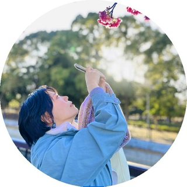

出会い。体験。来店へ。
Design Comp / Coding / Logo / Banner
CONCEPT コンセプト
架空のエッグタルト専門店「Nata de Encontro」を企画し、ブランドサイトとInstagram広告を制作。 「小さな出会い、大きなときめき。」を軸に、商品との出会いから来店、再訪へとつながる体験を設計しました。
VIEW SITEWEB WORKS
Profile

美しいもの、心が動くもの、思わず誰かに伝えたくなるものに惹かれ、気づけば、その理由まで考えています。 誰に届けたいのか。何を伝えたら、心が動くのか。 様々な人の想いをつなぎながら、形にしていく。 見た人の心が、ほんの少し動くものをつくりたい。
Strengths 強み
誰に、どんな思いを届けたいのか。目的や背景を深く考え、本質を見つけるところから始めます。
情報やアイディアを整理し、比較しながら最適な方法を選びます。
人・情報・想いをつなぎ、アイディアを形にします。顧客・チーム・クライアントとの対話も大切にします。
企画やデザインを通して、人の心が動く体験を作り、目に見える成果につなげます。
Web site / Comp
Design Comp / Coding / Logo / Banner
CONCEPT コンセプト
架空のエッグタルト専門店「Nata de Encontro」を企画し、ブランドサイトとInstagram広告を制作。 「小さな出会い、大きなときめき。」を軸に、商品との出会いから来店、再訪へとつながる体験を設計しました。
VIEW SITEDesign Comp / Coding / Banner
CONCEPT コンセプト
家族が制作に関わるホラーゲーム『怖録』の認知拡大を目的に、企業の許可を得てファンサイトを自主制作。 KVで世界観を伝え、PV・作品概要・配信情報へと興味が段階的に深まる構成に再設計しました。
VIEW SITETeam Project / Design Comp / Coding / Direction
OVERVIEW 概要
恵比寿の女性向けフィットネススタジオ「MIRROVE」のWebサイトをチームで制作。 自分の担当ページだけでなく、各メンバーが制作したページを確認し、MIRROVE全体がひとつのWebサイトとして統一感を持つように調整しました。
VIEW SITE